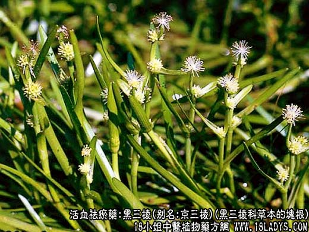
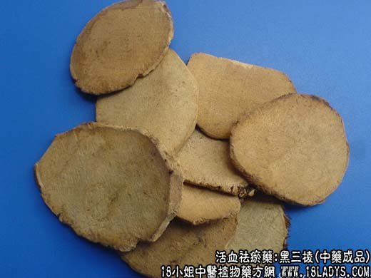

【中药概述】
黑三棱，别名：京三棱、红蒲根、光三棱，为黑三棱科草本植物黑三棱的块根。苦，平。归肝、脾经。
1．破血行气：用于血瘀作痛，经闭、产后瘀滞腹痛及症瘕等证，如（经验良方<三棱丸>）。
2．消积止痛：用于饮食积滞，胸腹胀满疼痛之证，配莪术，青皮，麦芽，枳实；又能消积行滞、止痛，再加党参，白术等药。
【药物形态】
本品呈三棱状卵形，长2.5～3mm，宽约1.5mm。表面黑色，粗糙，顶端较狭而尖，下端稍钝，有不规则的突起。质坚硬，断面灰白色，有油性。气微香，味辛。
【药效鉴别】三棱、莪术均能活血行气，消积止痛。但三棱破血之功较胜，而莪术行气止痛之力较强。
【化学成分】含挥发油，糖类。
【用量用法】3——10g，水煎服，或入丸剂。外用适量。
【使用注意】月经过多及孕妇忌用。
【注】黑三棱块茎近球形，表面灰白色，有残余的根茎疤痕及未去净的外皮黑斑。质轻，入水中多漂浮。其中产于江苏南京一带者，称为“京三棱”。
除非注明，文章解释权均归中药大全所有，欢迎转载！转载请注明本文地址，谢谢。本文地址： https://www.daquan.com/post/2009.html